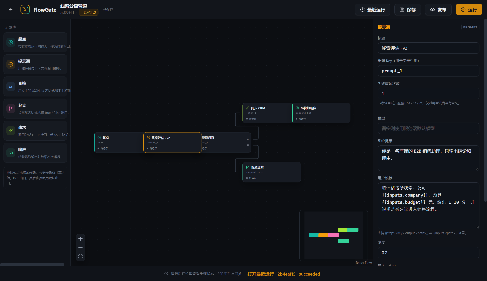

事件溯源运行
每一次运行都写入 append-only 的 Run / Step / JournalEvent。seq 在事务内分配，run_events 是真相，run_steps 只是可重建的投影。
FlowGate 把编排、执行与审计拆成三层：可编辑的 Pipeline、不可变的 Revision、append-only 的 JournalEvent。运行可以暂停、恢复，也可以从任意成功步骤分叉。
v1 · 核心编排闭环 LLM_MOCK 可离线演示 · 无需模型 Key

线索分级管道 · 6 个步骤 已发布 v2 · React Flow 画布
FlowGate v1 不追求功能堆叠，而是把「编排 → 执行 → 审计 → 回放」做成一条可验证的链路。
每一次运行都写入 append-only 的 Run / Step / JournalEvent。seq 在事务内分配，run_events 是真相，run_steps 只是可重建的投影。
拖到任意 seq 重建当时的节点状态；失败或取消后从断点续跑；从任意成功步骤 fork 一条新运行，复用上游输出，不复制历史。
React Flow 12 画布，6 种带类型步骤：起点、提示词、变换、分支、请求、响应。Descriptor 驱动的配置表单与 If-Match 草稿乐观锁。
运行事件从 Postgres 读取，经 SSE 按 seq 推送到浏览器；支持 cursor / Last-Event-ID 断线续传、15 秒 keepalive，终态关闭。
BullMQ 调度 + Redis 租约/心跳；节点级重试、取消、15 秒 stale-lease sweeper 自动恢复。外部副作用按 at-least-once 设计，attempt 可见。
Argon2id、refresh cookie 轮换、AES-256-GCM 模型密钥、SSRF 防护、Redis 限流。前端/后端/测试共用一份 Zod 图与事件契约。
HTTP 边界、领域模块、异步 worker 与数据层各自负责一件事；Postgres 是唯一真相，Redis 只做调度与短期状态。
登录、打开线索分级管道、运行一次、取消并恢复、拖动回放、从成功步骤分叉——全部来自真实运行。
录屏使用本地演示数据与 LLM_MOCK 演示模型，未调用真实模型 API。页面不提供在线 demo；录屏就是本次演示。也可以 直接打开视频文件。
以下截图均来自本地运行的 FlowGate 实例，使用演示工作区与演示数据。